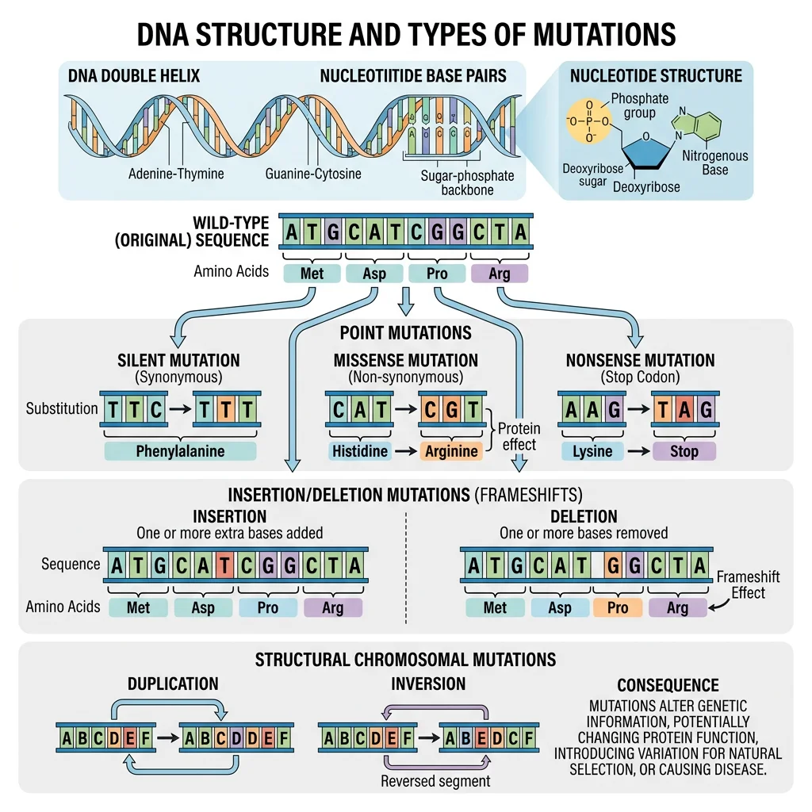
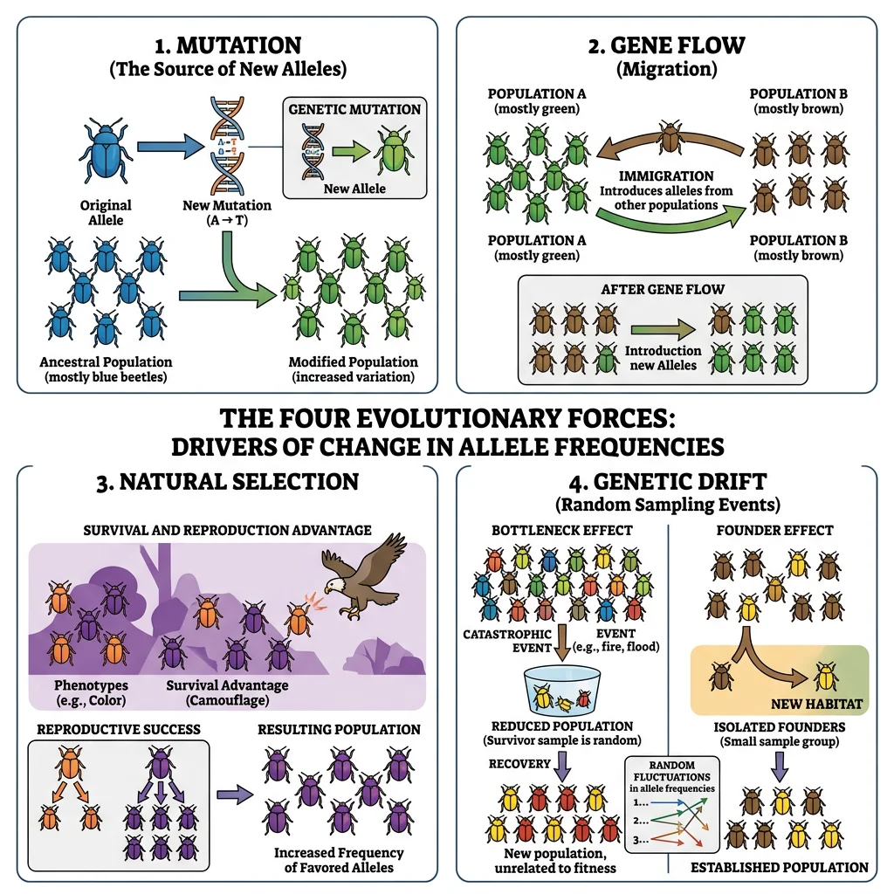
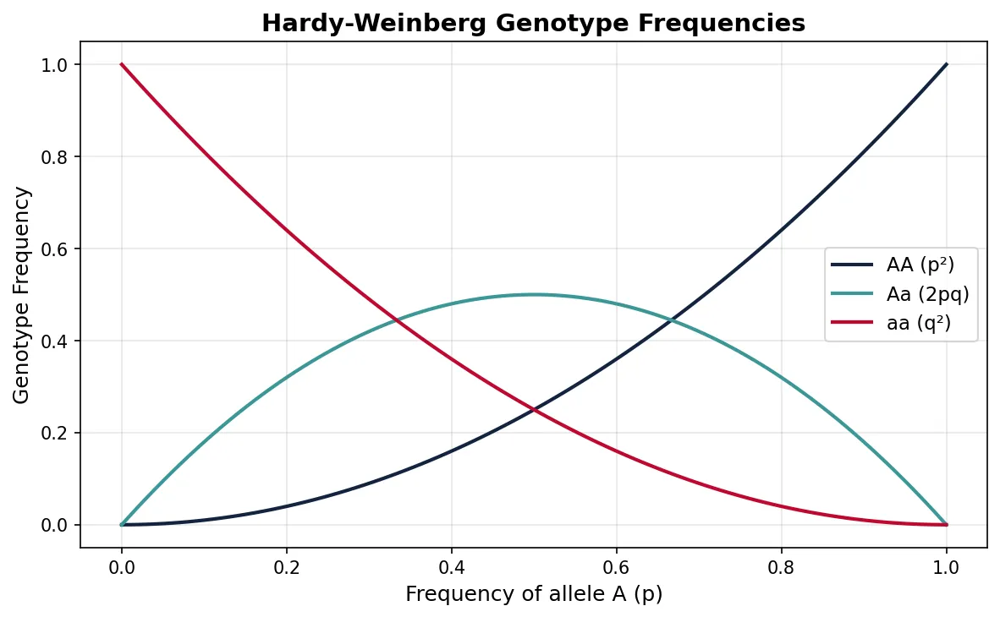
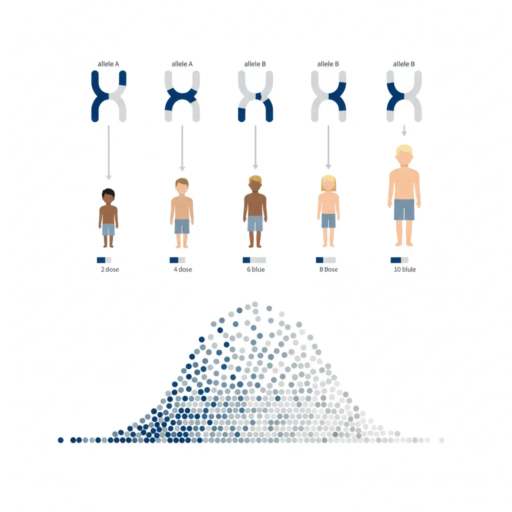
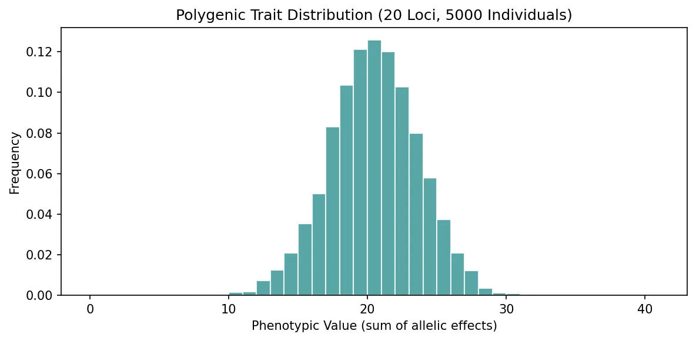
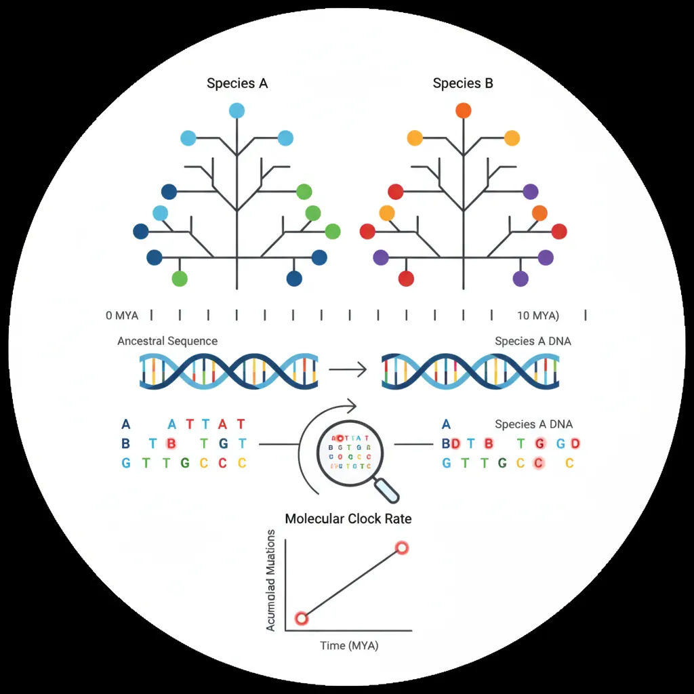
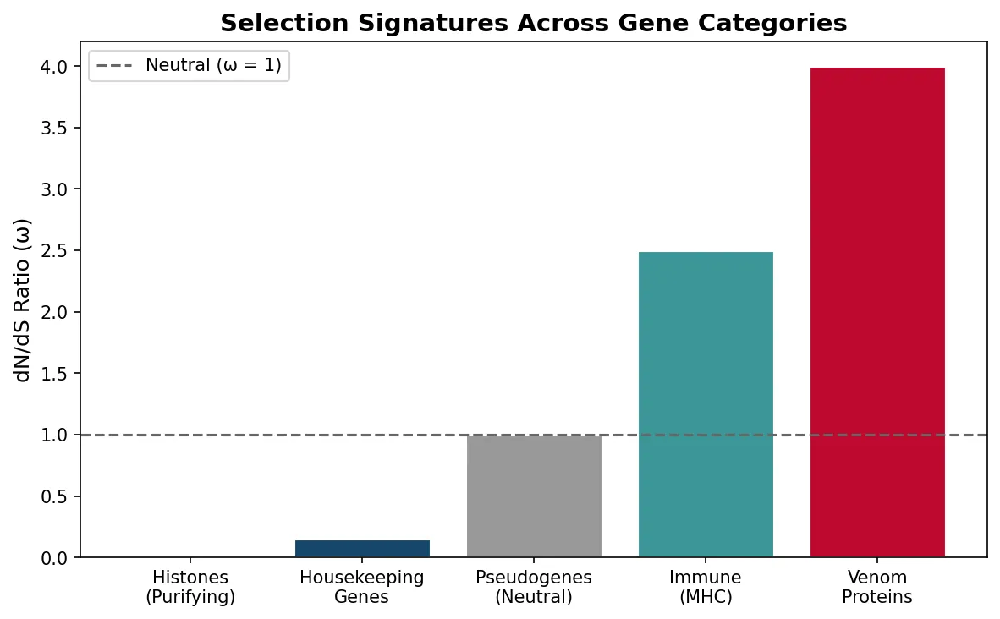
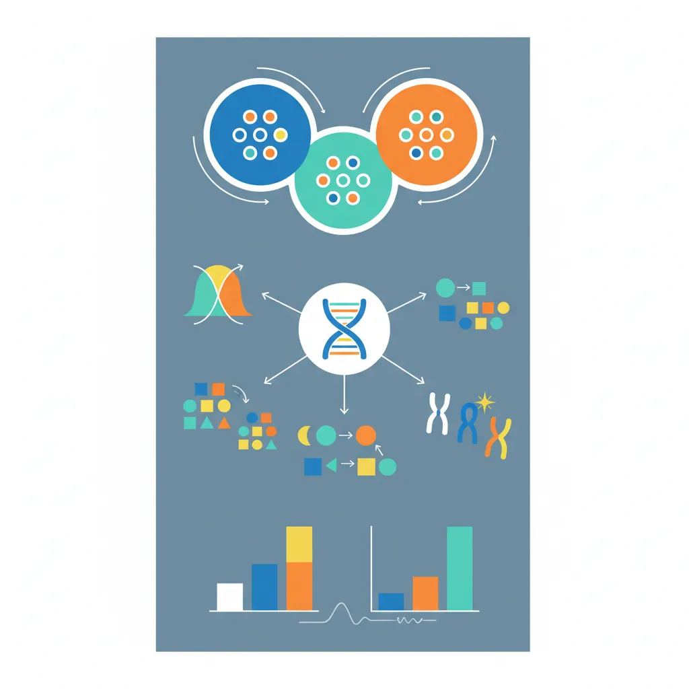
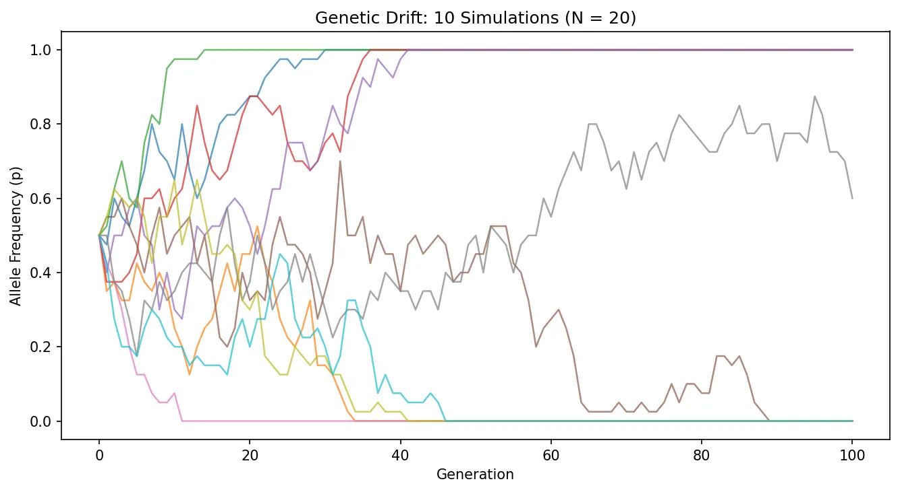

Evolutionary Biology Mastery
Darwin, Wallace & Natural Selection
Foundations, selection types, inclusive fitness, trade-offsGenetics of Evolution
DNA, population genetics, Hardy-Weinberg, molecular clocksSpeciation & Adaptive Radiation
Species concepts, reproductive isolation, rapid diversificationPhylogenetics & Taxonomy
Tree thinking, cladistics, molecular phylogenetics, classificationHuman Evolution & Migration
Hominin lineage, fossil evidence, Neanderthals, cultural evolutionCo-evolution & Symbiosis
Arms races, host-parasite, endosymbiosis, holobiontMass Extinctions & Biodiversity
Big Five extinctions, biodiversity patterns, conservationEvolutionary Developmental Biology
Hox genes, morphological innovation, heterochronyBehavioral & Social Evolution
Cooperation, game theory, sexual strategies, social insectsMathematical & Theoretical Evolution
Fitness landscapes, adaptive dynamics, ESS, selection modelsPaleontology & Fossil Interpretation
Radiometric dating, transitional fossils, taphonomyEvolutionary Genomics
Comparative genomics, gene duplication, HGT, epigeneticsMolecular Foundations
Evolution ultimately operates on DNA — the molecule that stores heritable information. While Darwin knew nothing of DNA (it was discovered structurally in 1953 by Watson and Crick, building on Rosalind Franklin's X-ray crystallography), understanding molecular biology is now essential for explaining how variation arises, how traits are inherited, and how populations change over time.

DNA Structure & Mutation Types
DNA is a double-stranded helix composed of four nucleotide bases: Adenine (A), Thymine (T), Guanine (G), and Cytosine (C). These bases pair specifically (A–T, G–C), and their sequence encodes genetic information. A gene is a segment of DNA that codes for a functional product (usually a protein).
Mutations — changes to DNA sequence — are the ultimate source of all genetic variation. They arise from errors in DNA replication, damage from radiation or chemicals, or mobile genetic elements. Key types include:
| Mutation Type | Description | Evolutionary Impact |
|---|---|---|
| Point (SNP) | Single nucleotide change (A→G) | Most common; can be synonymous (silent) or nonsynonymous (amino acid change) |
| Insertion / Deletion | Addition or removal of bases | Frameshifts alter all downstream codons — usually deleterious |
| Duplication | Segment of DNA copied | Creates redundant copies that can diverge — major source of new genes |
| Inversion | Segment flipped in orientation | Can suppress recombination and link co-adapted alleles |
| Translocation | Segment moves to different chromosome | Can cause reproductive isolation if heterozygotes are less fit |
Gene Expression & Regulation
Not all genes are active ("expressed") all the time. Gene regulation determines when, where, and how much of a gene product is made. This is critical for evolution because changes in gene regulation — not just gene sequence — can produce major phenotypic changes.
Recombination
Genetic recombination occurs during meiosis when homologous chromosomes exchange segments (crossing over). This shuffles existing alleles into new combinations, creating genetic diversity far faster than mutation alone.
Population Genetics
Population genetics is the mathematical backbone of evolutionary biology. It studies how allele frequencies change in populations due to the four evolutionary forces: natural selection, genetic drift, gene flow, and mutation. If Darwinian selection is the engine of evolution, population genetics provides the equations that describe how fast the engine runs.

Allele Frequencies
An allele frequency (or gene frequency) is the proportion of a particular allele among all copies of that gene in a population. For a gene with two alleles (A and a), if there are 600 A alleles and 400 a alleles in 500 diploid individuals (1000 alleles total), the frequency of A is p = 0.6 and the frequency of a is q = 0.4.
import numpy as np
# Calculate allele frequencies from genotype counts
AA_count = 200 # homozygous dominant
Aa_count = 200 # heterozygous
aa_count = 100 # homozygous recessive
total = AA_count + Aa_count + aa_count
# Each individual has 2 alleles
p = (2 * AA_count + Aa_count) / (2 * total) # frequency of A
q = (2 * aa_count + Aa_count) / (2 * total) # frequency of a
print(f"Total individuals: {total}")
print(f"Frequency of A (p): {p:.2f}")
print(f"Frequency of a (q): {q:.2f}")
print(f"p + q = {p + q:.2f}") # Should equal 1.0
Hardy-Weinberg Equilibrium
The Hardy-Weinberg principle (1908) states that allele and genotype frequencies remain constant from generation to generation in a population that satisfies five conditions:
- No mutation — no new alleles are introduced
- No selection — all genotypes are equally fit
- No gene flow — no migration in or out
- No genetic drift — population is infinitely large
- Random mating — no mate preference
Under these conditions, genotype frequencies are predicted by: p² + 2pq + q² = 1, where p² = frequency of AA, 2pq = frequency of Aa, and q² = frequency of aa.
Why Hardy-Weinberg Matters
The Hardy-Weinberg equation serves as a null model — a baseline expectation of no evolution. When real populations deviate from HW expectations, we know that at least one evolutionary force is operating. It is to population genetics what Newton's first law (an object in motion stays in motion) is to physics — it tells us what happens when nothing interesting is going on.
For example, if we observe a deficit of heterozygotes relative to HW prediction, this suggests non-random mating (such as inbreeding or assortative mating). If allele frequencies change across generations, selection, drift, or gene flow must be acting.
import numpy as np
import matplotlib.pyplot as plt
# Hardy-Weinberg genotype frequencies across all possible allele frequencies
p_values = np.linspace(0, 1, 100)
q_values = 1 - p_values
AA = p_values ** 2
Aa = 2 * p_values * q_values
aa = q_values ** 2
plt.figure(figsize=(8, 5))
plt.plot(p_values, AA, label='AA (p²)', color='#132440', linewidth=2)
plt.plot(p_values, Aa, label='Aa (2pq)', color='#3B9797', linewidth=2)
plt.plot(p_values, aa, label='aa (q²)', color='#BF092F', linewidth=2)
plt.xlabel('Frequency of allele A (p)', fontsize=12)
plt.ylabel('Genotype Frequency', fontsize=12)
plt.title('Hardy-Weinberg Genotype Frequencies', fontsize=14, fontweight='bold')
plt.legend(fontsize=11)
plt.grid(alpha=0.3)
plt.tight_layout()
plt.show()

Genetic Drift
Genetic drift is the random change in allele frequencies due to chance sampling in finite populations. Unlike natural selection, drift is non-adaptive — it does not "care" about fitness. Its effects are strongest in small populations and weakest in large ones.
Two important special cases of drift:
- Founder effect: A small group colonises a new area, carrying only a subset of the source population's genetic variation. Example: the Amish community in Pennsylvania descends from ~200 Swiss-German founders, leading to unusually high frequencies of rare genetic conditions like Ellis-van Creveld syndrome.
- Bottleneck effect: A population crash drastically reduces genetic diversity. Example: Northern elephant seals were hunted to ~20 individuals in the 1890s; despite recovery to ~175,000 today, they have almost no genetic variation at many loci.
Gene Flow
Gene flow (migration) is the transfer of alleles between populations through the movement of individuals or gametes. It tends to homogenise populations — reducing genetic differences between them. Even small amounts of gene flow (1 migrant per generation) can prevent populations from diverging genetically.
Gene flow can also introduce new alleles into a population, providing raw material for selection. In natural populations, gene flow is often mediated by seed dispersal (plants), larval dispersal (marine organisms), or animal migration.
Mutation-Selection Balance
Mutation-selection balance explains why deleterious alleles persist in populations. Mutation continuously introduces harmful variants at a rate μ, while selection removes them at a rate proportional to the selection coefficient s. At equilibrium, the frequency of a deleterious recessive allele is approximately q ≈ √(μ/s).
Quantitative Genetics
Most traits of evolutionary interest — body size, growth rate, disease resistance, behaviour — are not controlled by single genes. They are quantitative traits, influenced by many genes (polygenic) and by the environment. Quantitative genetics provides the tools to measure how much of trait variation is heritable and how rapidly selection can change a population.

Polygenic Traits
A polygenic trait is influenced by the cumulative effects of many genes, each contributing a small amount. Human height, for example, is influenced by thousands of loci. When many such genes combine, the result is a smooth, normal (bell-curve) distribution of phenotypes — even though the underlying genetics is discrete.
import numpy as np
import matplotlib.pyplot as plt
# Simulate polygenic trait: sum of 20 loci, each adding 0 or 1 to the phenotype
np.random.seed(42)
n_individuals = 5000
n_loci = 20
genotypes = np.random.binomial(n=2, p=0.5, size=(n_individuals, n_loci))
phenotypes = genotypes.sum(axis=1) # total "dose" across all loci
plt.figure(figsize=(8, 4))
plt.hist(phenotypes, bins=range(0, 2*n_loci+2), color='#3B9797',
edgecolor='white', alpha=0.85, density=True)
plt.xlabel('Phenotypic Value (sum of allelic effects)')
plt.ylabel('Frequency')
plt.title(f'Polygenic Trait Distribution ({n_loci} Loci, {n_individuals} Individuals)')
plt.tight_layout()
plt.show()
print(f"Mean phenotype: {np.mean(phenotypes):.1f}")
print(f"Std deviation: {np.std(phenotypes):.1f}")

Heritability Estimates
Narrow-sense heritability (h²) is the ratio of additive genetic variance (VA) to total phenotypic variance (VP): h² = VA / VP. It determines the response to selection — how quickly a trait can be shifted by selective breeding or natural selection.
The breeder's equation formalises this:
Where R = response to selection (change in mean trait value), h² = narrow-sense heritability, and S = selection differential (difference between the mean of selected parents and the population mean). Higher heritability = faster evolutionary response.
Artificial Selection
Artificial selection — the deliberate breeding of organisms for desired traits — is humanity's oldest evolutionary experiment. Darwin himself drew heavily on pigeon breeders' work as evidence for the power of selection.
The Illinois Long-Term Selection Experiment
Starting in 1896, researchers at the University of Illinois began selecting maize for high and low oil content. Over 100+ generations, the high-oil line increased from 4.7% to over 20% oil content, while the low-oil line decreased below 1%. After more than a century, both lines continue to respond to selection — demonstrating that standing genetic variation and new mutations continuously supply material for evolutionary change. This is the longest continuous selection experiment in history.
Molecular Evolution
Molecular evolution studies how DNA and protein sequences change over time. By comparing sequences across species, we can reconstruct evolutionary relationships, estimate divergence times, and determine whether selection or neutral processes shaped particular genes.

Neutral Theory
The Neutral Theory of Molecular Evolution, proposed by Motoo Kimura in 1968, argues that the vast majority of evolutionary changes at the molecular level are caused by random genetic drift of selectively neutral (or nearly neutral) mutations, rather than natural selection. This was revolutionary — it challenged the view that every molecular change was adaptive.
Molecular Clocks
If neutral mutations accumulate at a roughly constant rate, DNA sequences can serve as molecular clocks — measuring the time since two species diverged from a common ancestor. The more sequence differences, the longer ago the divergence.
The molecular clock is calibrated using fossils of known age. For example, if two species diverged 10 million years ago (known from fossils) and differ by 20 mutations, the clock ticks at 2 mutations per million years. This approach has been used to estimate that humans and chimpanzees diverged approximately 6–7 million years ago.
The Molecular Clock Hypothesis
Emile Zuckerkandl and Linus Pauling first observed that the number of amino acid differences in haemoglobin between species was roughly proportional to their estimated divergence time from the fossil record. This discovery — that proteins evolve at approximately constant rates — was one of the great surprises of 20th-century biology and laid the foundation for molecular phylogenetics.
Selection on Protein Structure
While many mutations are neutral, selection strongly shapes protein-coding genes. The ratio of nonsynonymous to synonymous substitution rates (dN/dS or ω) reveals the type of selection:
| dN/dS Value | Interpretation | Example |
|---|---|---|
| ω < 1 | Purifying selection — amino acid changes are harmful | Histone proteins (virtually unchanged for billions of years) |
| ω = 1 | Neutral evolution — changes are neither beneficial nor harmful | Pseudogenes (non-functional gene copies) |
| ω > 1 | Positive selection — amino acid changes are advantageous | Immune genes (MHC), venom proteins, reproductive proteins |
import numpy as np
import matplotlib.pyplot as plt
# Visualise dN/dS ratios for different gene categories
categories = ['Histones\n(Purifying)', 'Housekeeping\nGenes', 'Pseudogenes\n(Neutral)',
'Immune\n(MHC)', 'Venom\nProteins']
dn_ds = [0.02, 0.15, 1.0, 2.5, 4.0]
colours = ['#132440', '#16476A', '#999999', '#3B9797', '#BF092F']
plt.figure(figsize=(8, 5))
bars = plt.bar(categories, dn_ds, color=colours, edgecolor='white', linewidth=1.5)
plt.axhline(y=1.0, color='#666666', linestyle='--', linewidth=1.5, label='Neutral (ω = 1)')
plt.ylabel('dN/dS Ratio (ω)', fontsize=12)
plt.title('Selection Signatures Across Gene Categories', fontsize=14, fontweight='bold')
plt.legend()
plt.tight_layout()
plt.show()

Genome Evolution
Genomes are more than collections of genes. They include vast amounts of non-coding DNA — once dismissed as "junk DNA" — that plays regulatory, structural, and evolutionary roles. Key features of genome evolution include:
- Gene duplication — creates redundant copies that can diverge and acquire new functions (neofunctionalisation) or split ancestral functions (subfunctionalisation)
- Whole-genome duplication (WGD) — entire genomes copied; occurred twice early in vertebrate evolution and again in teleost fish, providing raw material for innovation
- Transposable elements — "jumping genes" that replicate and insert throughout the genome, comprising ~45% of the human genome and driving structural variation
- Genome streamlining — some lineages (bacteria, parasites) reduce genome size by losing unnecessary genes
Exercises & Review

Exercise 1: Hardy-Weinberg Calculation
In a population of 1,000 individuals, 90 have sickle-cell disease (genotype SS). Assuming Hardy-Weinberg equilibrium:
- Calculate the frequency of the S allele (q).
- Calculate the frequency of carriers (AS genotype).
- How many carriers would you expect in the population?
Show Answers
- q² = 90/1000 = 0.09, so q = √0.09 = 0.3
- p = 1 - 0.3 = 0.7; 2pq = 2 × 0.7 × 0.3 = 0.42
- 0.42 × 1000 = 420 carriers
Exercise 2: Genetic Drift Simulation
Run the simulation below with different population sizes (try N=20, N=200, N=2000). What happens to allele frequency variability as population size increases?
import numpy as np
import matplotlib.pyplot as plt
np.random.seed(42)
N = 20 # Try 20, 200, 2000
generations = 100
n_simulations = 10
p0 = 0.5 # starting frequency
plt.figure(figsize=(9, 5))
for sim in range(n_simulations):
freqs = [p0]
p = p0
for g in range(generations):
alleles = np.random.binomial(2 * N, p)
p = alleles / (2 * N)
freqs.append(p)
plt.plot(freqs, alpha=0.7, linewidth=1.2)
plt.xlabel('Generation')
plt.ylabel('Allele Frequency (p)')
plt.title(f'Genetic Drift: {n_simulations} Simulations (N = {N})')
plt.ylim(-0.05, 1.05)
plt.tight_layout()
plt.show()

Show Expected Result
With N=20, allele frequencies fluctuate wildly and often reach fixation (p=1) or loss (p=0). With N=2000, frequencies barely deviate from 0.5. This illustrates that drift is inversely proportional to population size.
Exercise 3: dN/dS Interpretation
A researcher compares a gene across 10 mammals and finds dN = 12 nonsynonymous substitutions and dS = 60 synonymous substitutions per site. What is ω, and what type of selection is operating?
Show Answer
ω = dN/dS = 12/60 = 0.2. Since ω < 1, this gene is under purifying (negative) selection — amino acid changes are being removed because they are harmful. The protein's function is strongly conserved.
Downloadable Worksheet
Genetics of Evolution Study Worksheet
Record your population genetics analyses and molecular evolution findings. Download as Word, Excel, or PDF.
Conclusion & Next Steps
In this article we have built the genetic framework that underpins all of evolution. From the molecular level — DNA mutations, gene regulation, and recombination — to the population level — allele frequencies governed by selection, drift, gene flow, and mutation — and finally to molecular evolution, where neutral theory and molecular clocks reveal the tempo and mode of change written in our genomes.